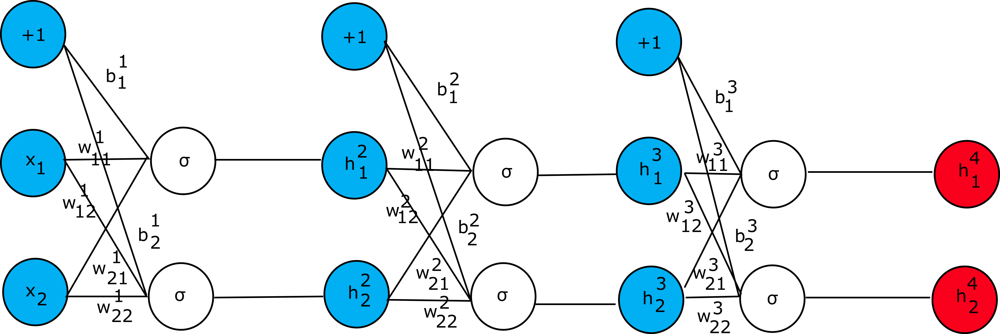

Artificial Neural Network Weight update algorithm
Neural networks are the powerful tools that are used when the task at hand is to classify the data.
Let’s consider simple artificial neural network that is shown below:

In this example, we consider that the error function is given as
(we use mean square error (MSE) here for simplicity): $$L=\frac{1}{2}\sum{(h_k^4-y_k)}^2$$,
where k is the class number. The idea is simple. During the learning phase, the weights of the neurons are adjusted
in such a manner that the error function is minimized. This is the task of the backpropagation algorithm that we will discuss.
Let’s consider first how to adjust the weights of the neural
network presented above and then we will give the general formula for the update rule.
In the derivations presented in the next few paragraphs we use sigmoid activation function
$$\sigma(x)\ =\ {(1-e^{-x})}^{-1}$$.
This function has a simple derivative $$\frac{d\sigma}{dx}=\sigma(x)(1-\sigma(x))$$ which is
convenient during the derivation of backpropagation rules. Given the network presented in the figure above,
let’s consider how different parts should be evaluated (starting from left to right):
$$z_1^1=w_{11}^1x_1+w_{21}^1x_2+b_1^1$$
$$z_2^1=w_{12}^1x_1+w_{22}^1x_2+b_2^1$$
$$h_1^2=\sigma(z_1^1)$$
$$h_2^2=\sigma(z_2^1)$$
$$z_1^2=w_{11}^2h_1^2+w_{21}^2h_2^2+b_1^2$$
$$z_2^2=w_{12}^2h_1^2+w_{22}^2h_2^2+b_2^2$$
$$h_1^3=\sigma(z_1^2)$$
$$h_2^3=\sigma(z_2^2)$$
$$z_1^3=w_{11}^3h_1^3+w_{21}^3h_2^3+b_1^3$$
$$z_2^3=w_{12}^3h_1^3+w_{22}^3h_2^3+b_2^3$$
$$h_1^4=\sigma(z_1^3)$$
$$h_2^4=\sigma(z_2^3)$$
Starting from the last layer (on the right) we can calculate the gradient with respect to weights
as follows (for now let’s focus what effect does weight w_{11}^3 have
on the error function):
$$\frac{\partial L}{{\partial w}_{11}^3}=\frac{\partial L}{\partial h_1^4}\frac{\partial h_1^4}{{\partial z}_1^3}\frac{\partial z_1^3}{{\partial w}_{11}^3}=(h_1^4-y_1)h_1^4(1-h_1^4)h_1^3$$
We can denote:
$$\delta_{h_1^{4=}}\frac{\partial L}{\partial h_1^4}\frac{\partial h_1^4}{z_1^3}=(h_1^4-y_1)h_1^4(1-h_1^4)$$
Now in the similar fashion we can derive:
$$\frac{\partial L}{{\partial w}_{12}^3}=\frac{\partial L}{\partial h_2^4}\frac{\partial h_2^4}{{\partial z}_2^3}\frac{\partial z_2^3}{{\partial w}_{12}^3}=(h_2^4-y_2)h_2^4\left(1-h_2^4\right)h_1^3$$
And
$$\delta_{h_2^{4=}}\frac{\partial L}{\partial h_2^4}\frac{\partial h_2^4}{\partial z_2^3}=(h_2^4-y_2)h_2^4(1-h_2^4)$$
To succeed, we need to continue to derive partial derivatives for all the weights (including the bias terms) in the
network. For example, computing the partial derivative with respect to $$w_{11}^2$$ and
$$w_{21}^2$$ results in the following expressions:
$$\frac{\partial L}{{\partial w}_{11}^2}=$$
$$\frac{\partial L}{\partial h_1^4}\frac{\partial h_1^4}{{\partial z}_1^3}\frac{\partial z_1^3}{\partial h_1^3}\frac{{\partial h}_1^3}{{\partial z}_1^2}\frac{{\partial z}_1^2}{{\partial w}_{11}^2}+$$
$$\frac{\partial L}{\partial h_2^4}\frac{\partial h_2^4}{{\partial z}_2^3}\frac{\partial z_2^3}{\partial h_1^3}\frac{{\partial h}_1^3}{{\partial z}_1^2}\frac{{\partial z}_1^2}{{\partial w}_{11}^2}$$
$$\frac{\partial L}{{\partial w}_{21}^2}=$$
$$\frac{\partial L}{\partial h_1^4}\frac{\partial h_1^4}{{\partial z}_1^3}\frac{\partial z_1^3}{\partial h_1^3}\frac{{\partial h}_1^3}{{\partial z}_1^2}\frac{{\partial z}_1^2}{{\partial w}_{21}^2}+$$
$$\frac{\partial L}{\partial h_2^4}\frac{\partial h_2^4}{{\partial z}_2^3}\frac{\partial z_2^3}{\partial h_1^3}\frac{{\partial h}_1^3}{{\partial z}_1^2}\frac{{\partial z}_1^2}{{\partial w}_{21}^2}$$
We can observe the pattern in these expressions and so we can generalize. Let’s use the term \delta_j^k such that:
$$\delta_j^k=\frac{\partial L}{\partial z_j^k}=\sum_{\forall l}\frac{\partial L}{\partial z_l^{k+1}}\frac{\partial z_l^{k+1}}{\partial z_j^k}$$
Observing that we have recurrency we can restate the above equation as follows:
$$\delta_j^k=\frac{\partial L}{\partial z_j^k}=\sum_{\forall l}\delta_l^{k+1}\frac{\partial z_l^{k+1}}{\partial z_j^k}$$
But, given that by the definition z_l^{k+1} is:
$$z_l^{k+1}=\sum_{\forall r}{w_{rl}^{k+1}\sigma(z_r^k)}$$
We can write $$\frac{\partial z_l^{k+1}}{\partial z_j^k}$$ as
$$\frac{\partial z_l^{k+1}}{\partial z_j^k}=w_{jl}^{k+1}\sigma\prime(z_j^k)$$
And therefore, we get:
$$\delta_j^k=\sigma\prime(z_j^k)\sum_{\forall l}{w_{jl}^{k+1}\delta_l^{k+1}}$$
With these equations at hand, we can write the partial derivative
$$\frac{\partial L}{\partial w_{ij}^k}$$ as follows:
$$\frac{\partial L}{\partial w_{ij}^k}=\delta_j^kh_i^k$$
We now have everything we need to construct the algorithm that updates the weights of the artificial
neural network. Basically, a rather trivial approach is to evaluate step by step the artificial neural
network (feedforward step) and obtain the outputs. Next compute the gradients and update the weights. Repeat
these steps until the difference in errors is below preconfigured threshold (in other words, continue the
update procedure until the error function does not change significantly). The weight update rule looks as follows:
$$w_{ij}^k=w_{ij}^k-\gamma\frac{\partial L}{\partial w_{ij}^k}$$
Were $$\gamma$$ is a learning rate, which is rather small value such as 0.01. It is the hyperparameter.
When working with neural networks, though, several other hyperparameters should be selected such as the number of hidden
layers, the size of the hidden layers, the activation function, the optimizer (such as gradient descent or Adam optimizer),
the learning rate parameter (which we described already) and regularization parameter.